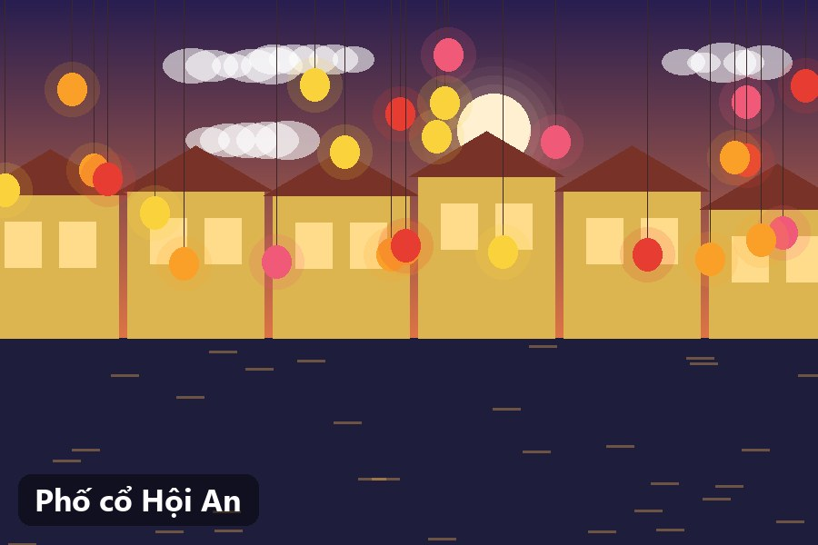

1. Không dùng clear: các thẻ cao thấp khác nhau làm hàng sau bị "mắc kẹt"




Đoạn văn này không có clear nên bị chen vào giữa các ảnh float.
2. Dùng clear: left cho phần tử đầu mỗi hàng (mỗi hàng 3 ảnh)
Đoạn văn có clear: both nên luôn nằm dưới toàn bộ ảnh float.
3. So sánh clear: left / right / both
float: left
float: right
clear: left – chỉ né phần tử float trái
float: left
float: right (cao hơn)
clear: left – vẫn nằm cạnh phần tử float phải
float: left
float: right (cao hơn)
clear: both – nằm dưới cả hai phần tử float